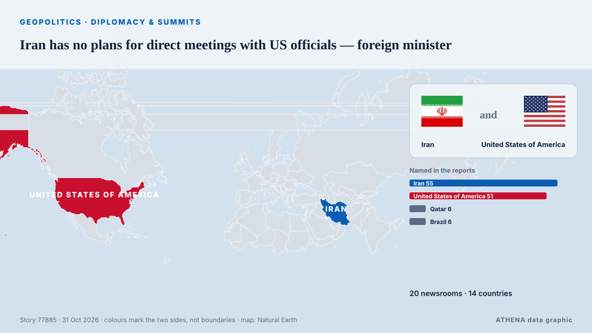

Διπλωματία & σύνοδοι
| 18 Οκτ | 0 |
|---|---|
| 19 Οκτ | 0 |
| 20 Οκτ | 0 |
| 21 Οκτ | 2 |
| 22 Οκτ | 1 |
| 23 Οκτ | 3 |
| 24 Οκτ | 0 |
| 25 Οκτ | 1 |
| 26 Οκτ | 4 |
| 27 Οκτ | 2 |
| 28 Οκτ | 3 |
| 29 Οκτ | 1 |
| 30 Οκτ | 5 |
| 31 Οκτ | 0 |
Οι τίτλοι των ειδήσεων παρουσιάζονται στα αγγλικά, όπως δημοσιεύτηκαν.

Iran has no plans for direct meetings with US officials — foreign minister
The American side’s attempt to open the door to dialogue and understanding more broadly is a positive step, Abbas Araghchi said. από TASS (English)
Turkic states target 2027 launch for joint satellite from Kazakhstan
Russia also intends to assist Tanzania in establishing a national space agency. από TASS (English)
Vance outreach to Iran related to medical supplies, says Trump
Oct 29 - US President Donald Trump said that Vice President JD Vance's outreach to Iran was about helping the country get medical supplies, after US media reported Vance had written to Tehran's top… από The Straits Times
Michael Carrick ‘not surprised’ to still be in Manchester United role
AFC Bournemouth visit Old Trafford on Sunday buoyed by a European win against seven-time continental champions AC Milan. από The National
EU considering Canada as ‘associate member’, Ursula von der Leyen says, despite internal opposition
The European Commission president was speaking at a Canada-EU summit in Montreal. από The Straits Times
N. Korea appears to test propaganda loudspeakers along border
SEOUL, Oct. 29 (Yonhap) -- North Korea appears to have conducted a test broadcas... από Yonhap (English)
EU and Canada to bring ties to 'highest' possible level at summit
The EU and Canada want to bring their relationship to the "highest level possible" as they face a "world of growing rivalries," the 27-nation bloc's chief said Thursday ahead of a meeting with… από The Local Spain
Norwegian prime minister denies Putin lectured him and Finnish president on medieval Slavs during call
Finnish President Alexander Stubb and Norwegian Prime Minister Jonas Gahr Støre spoke to Vladimir Putin about Russia’s war against Ukraine and diplomatic efforts to end it, after consulting Kyiv. από Ukrainska Pravda (English)
Russia woos African leaders at Moscow summit
Moscow seeks to strengthen ties with countries it sees as 'natural allies' against the West amid heavy sanctions over its Ukraine offensive. από Free Malaysia Today
Norway trolls Trump with toilet joke after his Nobel Prize meltdown
Norway’s tourist board hit back at the US president’s tantrum over not being awarded the Nobel Prize. από The Independent
Ushakov: Date of trilateral talks depends on Kyiv's actions
The Russian leader has agreed "in principle" to resume the talks after Nov. από PBS NewsHour World
Ethiopia Welcomes UAE Candidate Lana Nusseibeh for UN Secretary-General Post
UAE Minister of State Lana Nusseibeh has entered the race to become the next UN secretary general. από The National
Zacharia blames media for troubled stint as White House press secretary
A White House Press official said Friday that Secretary Katie Zacharia was "let go" from her role after US President Donald Trump signaled she was on her way out, a week after he picked her for the… από France 24 English
Zelensky: No Energy Ceasefire With Russia, but Oleshky Truce Brings Hope
On Wednesday, President Volodymyr Zelensky said the proposed energy ceasefire between Ukraine and Russia never took effect because Moscow continued striking Ukrainian energy infrastructure. από Kyiv Post
Norway and Finland hold rare phone call with Putin: What that means
The two Nordic leaders are attempting to influence US-brokered talks in Abu Dhabi to end the war in Ukraine. από Al Jazeera English
Melania Trump Brokers Russia-Ukraine Ceasefire in Oleshky
Residents of the Russian-occupied Ukrainian town have reported a worsening food crisis since 2022. από Express Tribune
Attacker killed outside Belgrade’s Israeli embassy
Serbian police say an unidentified assailant attacked a guard with knives outside the Israeli Embassy in Belgrade and was killed just after midnight Wednesday. από ABC News (International)
Rapper Nicki Minaj joins Trump onstage at Michigan rally
The Super Bass singer is the latest big name to campaign in Michigan, where a tight Senate race is playing out ahead of the 3 November midterms. από BBC News
Talks on Ukraine in Abu Dhabi to take place after November 4 — Kremlin aide
The date will be determined soon, Yury Ushakov said. από TASS (English)